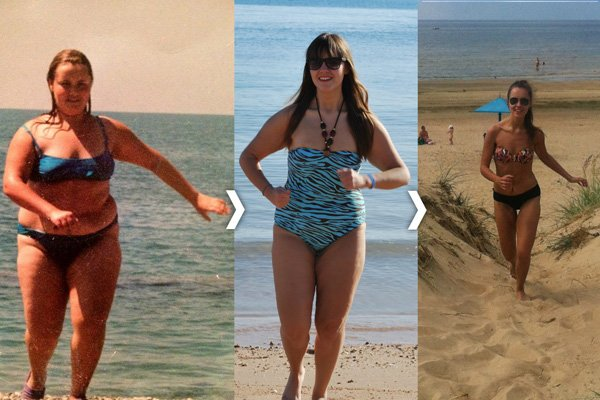

Η ιστορία για το πώς σταμάτησα τις δίαιτες και τελικά έχασα βάρος
Γεια σε όλους! Ονομάζομαι Κατερίνα Σικινιώτη, καλωσορίσατε στο προσωπικό μου ιστολόγιο. Επιτρέψτε μου να μοιραστώ μαζί σας την ιστορία μου για το πώς έχασα γρήγορα βάρος. Θα προσπαθήσω να απαντήσω σε όλους σας και να σας υποστηρίξω όσο μπορώ. Ωστόσο, τόσο πολλοί άνθρωποι μου έχουν γράψει και όχι μόνο σε αυτό το ιστολόγιο, που θα έπρεπε να είμαι όλη μέρα μπροστά στην οθόνη για να τα διαβάζω όλα!
Γι’ αυτό αποφάσισα να γράψω αυτό το άρθρο και να απαντήσω στην ερώτηση που απασχολεί όλους: Πώς έχασα ολόκληρα 26 κιλά;
Δεν ήμουν ποτέ αδύνατη. Πάντα όμως ονειρευόμουν μια λεπτή σιλουέτα. Επιτέλους, το όνειρό μου εκπληρώθηκε - χάρη στο ειδικό κινέζικο τσάι Matcha. Με βοήθησε να πετύχω τον στόχο μου!
Έχασα βάρος σε ακριβώς ένα μήνα! Απλά απίστευτο ΑΠΟΤΕΛΕΣΜΑ, έτσι δεν είναι;
Πάντα ένιωθα άσχημα μέσα στο μεγάλο μου σώμα, ζήλευα κάθε αδύνατη γυναίκα, θαύμαζα τις άλλες γυναίκες και ήθελα να γίνω το ίδιο. Ωστόσο, μέσα μου πάντα ένιωθα αδύνατη. Ήθελα στο μέλλον, ο άνδρας μου να με σηκώνει στα χέρια του και τα παιδιά μου να έχουν μια όμορφη μητέρα.
Το βάρος μου έφτασε σχεδόν 90 κιλά! Τώρα δεν μπορώ πια να κοιτάω παλιές μου φωτογραφίες, χωρίς να τρομάζω! Οι συνάδελφοι στη δουλειά με κορόιδευαν, κάτι που με έκανε να παχαίνω ακόμα περισσότερο, να τρώω περισσότερο, για να ξεχάσω το στρες. Χρειαζόμουν ένα κίνητρο για να αρχίσω να χάνω βάρος. Το κίνητρο προέκυψε τελικά μέσω μιας αρνητικής εμπειρίας:
Απολύθηκα 6 μήνες αργότερα, καθώς όπως ισχυρίστηκαν οι προϊστάμενοί μου, δεν ταίριαζα εμφανισιακά με τα πρότυπα μιας τόσο μοντέρνας εταιρείας και δεν ήμουν τόσο εμφανίσιμη και χαριτωμένη όπως οι άλλες γυναίκες υπάλληλοι. Πληγώθηκα όσο ποτέ άλλοτε. Έτσι αποφάσισα να αλλάξω τη ζωή μου.
Η ιστορία μου: Πώς έχασα βάρος

Το πρώτο που σκέφτηκα είναι ότι θα ήταν αρκετό να σταματήσω να υποβιβάζω τον εαυτό μου, για να απαλλαγώ από τα περιττά κιλά. Αυτό όμως δεν ήταν αρκετό τελικά. Νομίζω ότι έχω δοκιμάσει όλες τις δίαιτες του κόσμου και έχω προσλάβει τους ακριβότερους προσωπικούς γυμναστές. Αλλά... όλα ήταν μάταια, το στρες και η κατάθλιψη μόνο επιδείνωναν την κατάστασή μου, δεν έχανα ούτε μισό κιλό! Μήπως ήταν πρόβλημα λόγω ηλικίας; Είμαι 28 ετών πλέον, υπήρξα χοντρή σε όλη μου τη ζωή και θα παραμείνω έτσι. Αυτές ήταν οι σκέψεις μου.
Έχω μια φίλη, της οποίας είναι η δουλειά να φέρνει από την Κίνα κάθε είδους προϊόν και να τα πουλάει στο διαδίκτυο. Καθώς είμαστε πολύ καλές φίλες, μοιράστηκα μαζί της την απογοήτευσή μου για το αδυνάτισμα και πώς παράτησα άλλον ένα πρόγραμμα δίαιτας. Μια μέρα, γύρισε από ένα ταξίδι της στο Πεκίνο, μου τηλεφώνησε και είπε: «Κατερίνα, έχω ένα δώρο για σένα!». Είπα, «ευχαριστώ Ελενάκι μου, αλλά φοβάμαι ότι δεν θα μου κάνει». Και αυτή απάντησε: «Όλα θα σου πηγαίνουν μετά από αυτό καλή μου!». Η Έλενα ακουγόταν πολύ αινιγματική και άρχισα να ανυπομονώ.
Η Ελένη μου έφερε σκόνη τσαγιού Matcha για απώλεια βάρους. Αποδείχθηκε ότι ήταν ένα εξαιρετικά αποτελεσματικό προϊόν. Το Matcha για απώλεια βάρους χρησιμοποιείται εδώ και χρόνια στην Ανατολή - στην Κίνα και στο Θιβέτ. Τώρα έχει κυριολεκτικά μεγάλη ζήτηση εκεί! Τα τελευταία χρόνια, οι Κινέζες εθίστηκαν στο γρήγορο φαγητό, κάτι που οδηγεί σε αύξηση βάρους. Αλλά χάρη στο , δεν θα παχύνουν ακόμα κι αν τρώνε μπέργκερ και πατάτες τηγανητές.Το Matcha δεν χρειάζεται βράσιμο ή μεγάλη προετοιμασία. Απλώς διαλύστε ένα κουταλάκι του γλυκού σκόνη σε ένα ποτήρι βραστό νερό και πίνετέ το κάθε μέρα.
Μου είναι δύσκολο να πιστέψω το πώς είμαι τώρα!

Δεν θα το πιστέψετε: όχι δίαιτες, εξαντλητικές προπονήσεις στο γυμναστήριο, ραγάδες, κρεμασμένα στήθη και άλλες «εκπλήξεις» που συνήθως είναι το αποτέλεσμα μιας απότομης απώλειας βάρους.
Για μεγάλη μου έκπληξη, περίπου ένα μήνα αργότερα, βρήκα έναν ιστότοπο όπου μπορείτε να αγοράσετε το . Όπως βλέπετε, τα εισάγουν πλέον από την Κίνα - και σε εμάς!
Πρόσφατα, βρήκα μια επαληθευμένη ιστοσελίδα . Μην αμελήσετε να κάνετε παραγγελία.